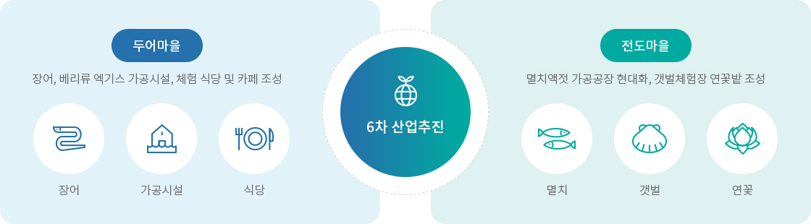
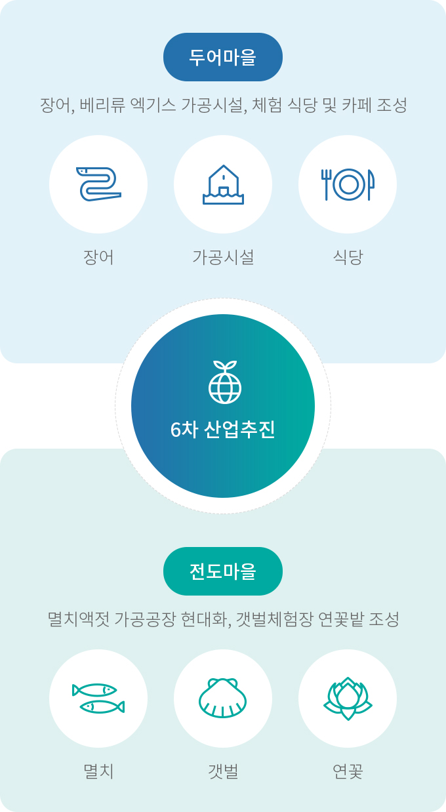

어촌6차산업화
- 홈
- 사업소개
- 활력있는 어촌
- 어촌6차산업화
사업목적
어촌의 유·무형 자원을 활용, 어촌주민 주도로 특화계획에 따라 1·2·3차 산업과 융합·연계를 통해 새로운 부가가치를 창출함으로써 어촌경제 활성화에 기여사업개요
| 구분 | 내용 |
|---|---|
| 사업기간 |
|
| 사업부서 |
|
| 법적근거 |
|
사업내용


6차 산업추진
- 두어마을 - 장어, 베리류 엑기스 가공시설, 체험 식당 및 카페 조성
- 장어
- 가공시설
- 식당
- 전도마을 - 멸치액젓 가공공장 현대화, 갯벌체험장 연꽃밭 조성
- 멸치
- 갯벌
- 연꽃